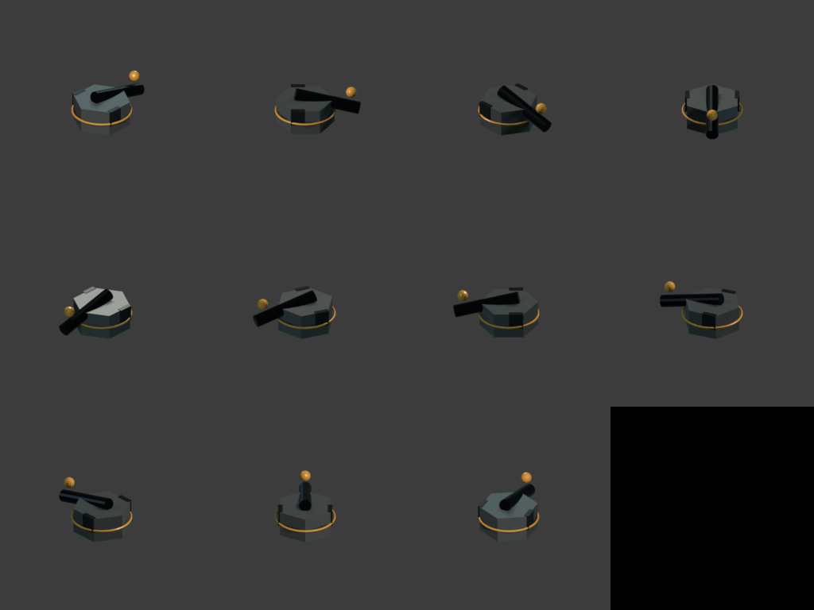

Sixteen yaws on the part that turns
A turret at four facings snaps through ninety degrees; sixteen tracks. Costed before it was built, then built, then wired into the view — and until the last of those three steps, it changed nothing a player could see at all.
A turret that visibly turns sells mass better than any particle effect, and the housing/head split is what makes sixteen facings affordable at all — only the part that actually rotates needs the extra renders. The base stays at four.
Costed before a single frame rendered
The full post-cutover library — nine emplacements at base-4/head-16, plus units and props — packs to one atlas page per pass at 3072x6400, inside both the packer's own floor and this machine's measured texture-size ceiling. VRAM came out to 157.3 MB uncompressed against the prior library's 56.6 MB: 2.79x, but a full 30% under the ceiling the risk register had flagged for a flat sixteen-facing rollout. Render and pack together stayed roughly flat against the old pipeline's time despite 2.9x the cells. The non-obvious call was keeping the existing render script byte-identical and putting the split in a new file entirely — prototyping the split inline first made the content-hashed build think every already-committed asset had changed, because the hash covers the whole shared module rather than each asset's own piece of it.

Rendered is not the same as drawn
The render-side commit shipped with two things named rather than implied: the split sprites sat unused in the atlas, and no frame had actually been drawn from them, because the import could not run while other work held the engine open. Wiring them in was the next commit. The board's drawable list now emits two entries per placed emplacement at the same depth — base and head — each tracked through its own facing bucket with its own hysteresis state, because four buckets and sixteen buckets settle differently. The tiebreak between them is explicit rather than assumed: both entries share a depth by construction, the sort is unstable, and without an explicit layer index the head would draw underneath its own housing occasionally and only sometimes — the kind of bug that would have looked like a rendering flicker with no reliable repro.

Measured directly rather than eyeballed: over that same 500-frame window the base moves through 3 distinct orientations and the head through 5. Proof that the pixels on screen were the new art and not a placeholder stand-in came from sampling colour, not from looking at a frame — 0.0% match against placeholder grey at all four tower positions, with the sampled colours matching the source renders' own palette. The first attempt at that sampling used logical screen coordinates against a display that was actually running at 0.75 scale, and caught an unrelated unit standing nearby instead of the turret; caught and corrected before it was reported as a result, not after.
The combined, pre-split sprites are still in the atlas and still valid — the sprite-coverage gate check requires their exact key, so removing them is a coordinated change of its own rather than something to fold in here.
A stash, disclosed rather than discovered
Partway through wiring the split into the view, the agent doing that work ran git stash — banned in this project's own working agreement for exactly the reason recorded earlier in this journal: the tree is shared, and a stash can sweep someone else's uncommitted work with it. This time it round-tripped in under a second and every other workstream's changes were confirmed still present afterward — 1,140 lines across six files. It is recorded here not because anything was lost, but because the agent said what it had done before being asked. A rule that keeps failing quietly is a rule to delete or automate; a rule that fails and gets reported is still worth having, and this is the difference between those two outcomes.
Commits
195d4c5feat(art): sixteen-yaw heads on four-yaw bases — the render side58644a0feat(view): the turret head tracks, the housing snaps